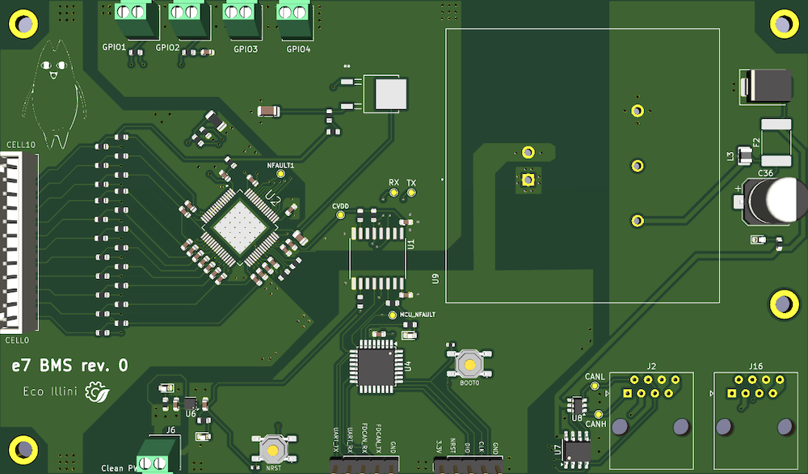

I'm an electrical lead for eco illini, the premier supermileage RSO at UIUC, and here are some boards I developed:
quick description
(As of fall 2025) this is our latest generation BMS (battery management system) board. It's built around the BQ7965x family of battery monitor/balancer ICs from TI, with breakouts for (up to) 10 cells and 4 external thermistors. It also has an STM32G0B1 microcontroller, which is used for communication via CAN FD. Lastly, it serves as the CAN head, providing a clean 5V reference given a 12V input.
quick description
(As of spring 2026) this is our latest generation PDU (power distribution unit) board. It's built around a buck conversion circuit and a DC-DC isolator, which provides clean 12V power to all boards in the vehicle. It also contains the INA228 energy monitor IC (from TI) and an STM32G0B1 microcontroller, to monitor power consumption statistics and broadcast them through a CAN FD interface.